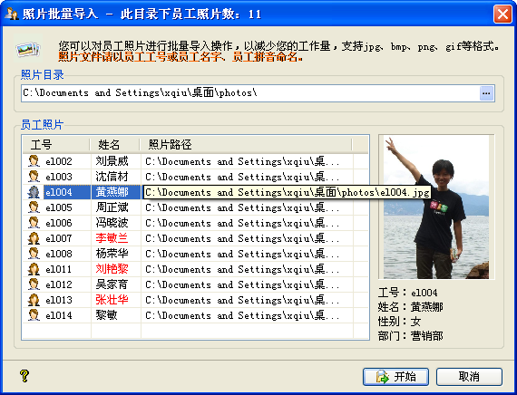

| 数据维护 - 批量导入员工照片 |
|
您可以在这里为员工进行照片的批量导入操作，以简化您的工作量，其操作界面如下图示：  您需要选择员工照片存放的目录，其中员工照片文件可以是jpg、bmp、png、gif、wmf等格式，且图片文件名必须是以已有员工的工号、姓名或姓名拼音命名，如上面的el004.jpg、黄燕娜.bmp或者hyn.gif等都是合法的。 您在选择完成照片目录，或者输入照片目录并按回车后，系统就会以员工档案表为基础，搜寻对应照片文件。找到的文件会列在窗体中，并且可以预览员工照片及其工号、姓名、性别及部门等信息，您还可以双击预览图片以查看图片员来大小。 然后您就可以点击[开始]进行员工照片的导入操作，同时会有进度显示。照片导入成功后，员工档案表数据会被即时刷新。 注意：秋风人事档案管理系统照片目录为安装目录下的photos文件夹，您不能从这里导入员工照片。 |